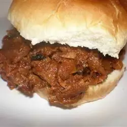

Venison Sloppy Joe

Description
This recipe for venison Sloppy Joes comes from my friend who is a guide in Alaska. It's excellent for sandwiches on
rolls with sharp Cheddar cheese. Yum yum!
It's slow-cooked in a slow cooker so even the toughest of roasts or stew meats will work; eventually the meat just
falls apart! It's also good served over hot
cooked rice.
Ingredients
- ¼ pound bacon
- 2 pounds venison stew meat
- 1 large yellow onion, chopped
- ½ cup brown sugar
- ¼ cup wine vinegar
- 1 tablespoon ground cumin
- 1 teaspoon chili powder
- 2 tablespoons minced garlic
- 1 tablespoon prepared Dijon-style mustard
- 1 cup ketchup
- salt and pepper to taste
Steps
- Cook bacon in a large, deep skillet over over medium-high heat until evenly browned, 5 to 10 minutes. Remove
from the skillet, crumble and set aside. Brown stew meat in bacon grease for flavor.
- Put onion, brown sugar, vinegar, cumin, chili powder, garlic, mustard, ketchup, salt, and pepper in slow
cooker and mix well. Add bacon and venison and stir together.
- Cook on Low for at least 8 hours. Use a fork to separate the meat into a thick and yummy Sloppy Joe-style
barbecue.